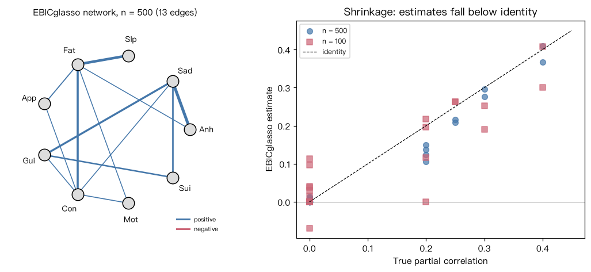

Example04 / 10
EBICglasso——图形 LASSO 加 EBIC 选择惩罚参数
用块坐标下降实现图形 LASSO（Friedman 等, 2008；对角元不惩罚，与 qgraph::EBICglasso 默认一致）， 在 λ ∈ [0.01 λ_max, λ_max] 的对数网格上计算 EBIC（γ = 0.5），选取 EBIC 最小的网络。 输出解读：未正则化的样本偏相关 36 条边全部非零；EBICglasso 把大多数虚假小边压成 0， 真实边大多保留，但边权被系统地压小（收缩偏倚，真实边平均权重低于真值 0.27）。 n 较小时，漏检的真实边和保留下来的虚假边都会增多——“有边/无边”本身带有抽样误差。
Output输出图

Output文字输出
n = 500: 选中 λ = 0.093，边数 13，真实边命中 10/10，虚假边 3
真实边平均权重（真值 0.27）: 0.229
n = 100: 选中 λ = 0.111，边数 16，真实边命中 9/10，虚假边 7
真实边平均权重（真值 0.27）: 0.221Code代码
# 用块坐标下降实现图形 LASSO（Friedman 等, 2008；对角元不惩罚，与 qgraph::EBICglasso 默认一致），
# 在 λ ∈ [0.01 λ_max, λ_max] 的对数网格上计算 EBIC（γ = 0.5），选取 EBIC 最小的网络。
# 输出解读：未正则化的样本偏相关 36 条边全部非零；EBICglasso 把大多数虚假小边压成 0，
# 真实边大多保留，但边权被系统地压小（收缩偏倚，真实边平均权重低于真值 0.27）。
# n 较小时，漏检的真实边和保留下来的虚假边都会增多——"有边/无边"本身带有抽样误差。
import numpy as np
TRUE_EDGES = {(0, 1): .40, (1, 5): .30, (1, 8): .25, (5, 8): .25, (2, 3): .40,
(3, 6): .30, (3, 7): .20, (3, 4): .20, (0, 3): .20, (6, 7): .20}
def simulate_symptoms(n, seed=0):
K = np.eye(9) # 模拟数据，仅用于演示方法
for (i, j), w in TRUE_EDGES.items():
K[i, j] = K[j, i] = -w
rng = np.random.default_rng(seed)
return rng.multivariate_normal(np.zeros(9), np.linalg.inv(K), size=n)
def glasso(S, lam, W0=None, max_iter=200, tol=1e-5):
"""图形 LASSO（块坐标下降）。返回精度矩阵估计 Θ 与协方差估计 W。对角元不惩罚。"""
p = S.shape[0]
W = S.copy() if W0 is None else W0.copy()
B = np.zeros((p, p)) # 每列的 LASSO 系数，用于热启动
for _ in range(max_iter):
W_old = W.copy()
for j in range(p):
idx = np.arange(p) != j
W11, s12, beta = W[np.ix_(idx, idx)], S[idx, j], B[idx, j].copy()
for _ in range(100): # LASSO 坐标下降：min ½βᵀW11β − s12ᵀβ + λ|β|₁
beta_old = beta.copy()
for k in range(p - 1):
r = s12[k] - W11[k] @ beta + W11[k, k] * beta[k]
beta[k] = np.sign(r) * max(abs(r) - lam, 0) / W11[k, k]
if np.max(np.abs(beta - beta_old)) < tol:
break
B[idx, j] = beta
w12 = W11 @ beta
W[idx, j] = W[j, idx] = w12
if np.mean(np.abs(W - W_old)) < tol:
break
Theta = np.zeros((p, p))
for j in range(p):
idx = np.arange(p) != j
beta = B[idx, j]
t22 = 1.0 / (W[j, j] - W[idx, j] @ beta)
Theta[j, j] = t22
Theta[idx, j] = -beta * t22
Theta = (Theta + Theta.T) / 2
return Theta, W
def ebic_glasso(X, gamma=0.5, n_lambda=40, ratio=0.01):
n, p = X.shape
S = np.corrcoef(X, rowvar=False)
lam_max = np.max(np.abs(S - np.eye(p)))
lams = np.exp(np.linspace(np.log(lam_max), np.log(ratio * lam_max), n_lambda))
best, W = None, None
for lam in lams: # 从稀疏到稠密，热启动
K, W = glasso(S, lam, W0=W)
E = int(np.sum(np.abs(K[np.triu_indices(p, 1)]) > 1e-8))
loglik = np.linalg.slogdet(K)[1] - np.trace(S @ K)
ebic = -n * loglik + E * np.log(n) + 4 * gamma * E * np.log(p)
if best is None or ebic < best[0]:
best = (ebic, lam, K)
_, lam, K = best
d = np.sqrt(np.diag(K))
P = -K / np.outer(d, d)
np.fill_diagonal(P, 0)
P[np.abs(P) < 1e-8] = 0
return P, lam
true_set = set(TRUE_EDGES)
iu = np.triu_indices(9, 1)
P_hat = {} # 记录各样本量的估计网络，供作图
for n in [500, 100]:
X = simulate_symptoms(n, seed=3)
P, lam = ebic_glasso(X)
P_hat[n] = P
est = {(i, j) for i, j in zip(*iu) if P[i, j] != 0}
print(f"n = {n}: 选中 λ = {lam:.3f}，边数 {len(est)}，真实边命中 {len(est & true_set)}/10，虚假边 {len(est - true_set)}")
print(f" 真实边平均权重（真值 0.27）: {np.mean([P[e] for e in true_set]):.3f}")
import networkx as nx
import matplotlib.pyplot as plt
def draw_signed(ax, M, labels, thr, title, node_color="#DDDDDD", node_size=180, pos=None):
"""边宽 ∝ |权重|，蓝色为正边、红色为负边。"""
n = len(labels)
pos = nx.circular_layout(range(n)) if pos is None else pos
G = nx.Graph(); G.add_nodes_from(range(n))
G.add_weighted_edges_from((i, j, M[i, j]) for i in range(n) for j in range(i + 1, n) if abs(M[i, j]) > thr)
ws = [d["weight"] for _, _, d in G.edges(data=True)]
nx.draw_networkx_edges(G, pos, ax=ax, width=[max(1.0, 8 * abs(w)) for w in ws],
edge_color=["#4477AA" if w > 0 else "#CC6677" for w in ws])
nx.draw_networkx_nodes(G, pos, ax=ax, node_size=node_size, node_color=node_color, edgecolors="k")
lab_pos = {k: (1.22 * np.asarray(v)) for k, v in pos.items()}
nx.draw_networkx_labels(G, lab_pos, labels=dict(enumerate(labels)), ax=ax, font_size=9)
ax.plot([], [], color="#4477AA", lw=2, label="positive")
ax.plot([], [], color="#CC6677", lw=2, label="negative")
ax.legend(loc="lower right", fontsize=7, frameon=False)
ax.set_title(title, fontsize=10); ax.set_aspect("equal"); ax.axis("off")
ax.set_xlim(-1.45, 1.45); ax.set_ylim(-1.45, 1.45)
abbr = ["Anh", "Sad", "Slp", "Fat", "App", "Gui", "Con", "Mot", "Sui"]
Ptrue = np.zeros((9, 9))
for (i, j), w in TRUE_EDGES.items():
Ptrue[i, j] = Ptrue[j, i] = w
fig, axes = plt.subplots(1, 2, figsize=(10, 4.4))
draw_signed(axes[0], P_hat[500], abbr, 0, f"EBICglasso network, n = 500 ({int(np.sum(P_hat[500][iu] != 0))} edges)")
for n, mk, col in [(500, "o", "#4477AA"), (100, "s", "#CC6677")]:
axes[1].scatter(Ptrue[iu], P_hat[n][iu], marker=mk, s=40, color=col, alpha=0.7, label=f"n = {n}")
axes[1].plot([0, 0.45], [0, 0.45], "k--", lw=0.8, label="identity")
axes[1].axhline(0, color="gray", lw=0.6)
axes[1].set(xlabel="True partial correlation", ylabel="EBICglasso estimate", title="Shrinkage: estimates fall below identity")
axes[1].legend(fontsize=8)
plt.tight_layout(); plt.show()Run在浏览器中运行
首次加载 Python 环境约需 20–40 秒；可以修改参数后重新运行。